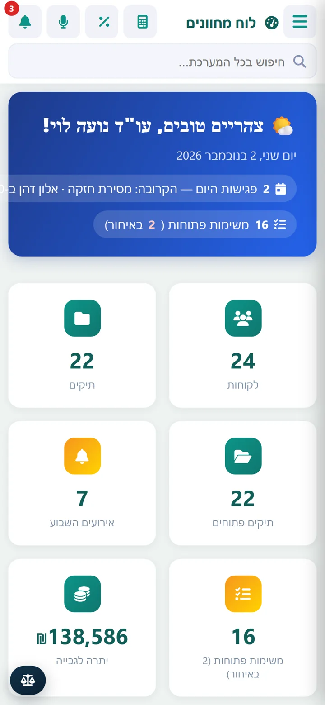
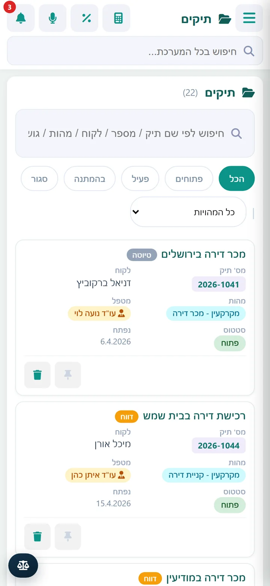
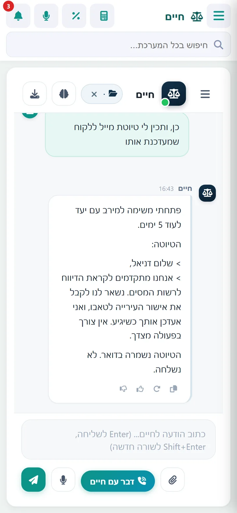
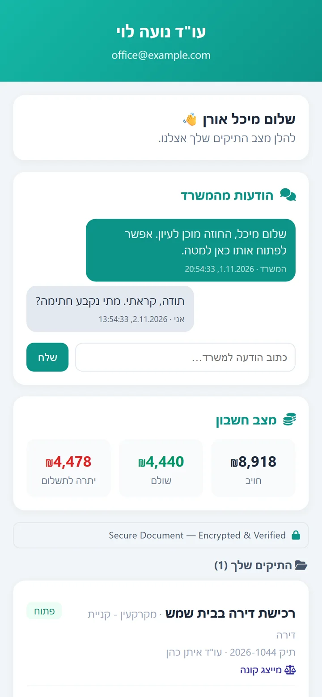

נבנתה בתוך משרד מקרקעין. עובדת בו כל יום.
לקסקור מנהלת את העסקה מהטיוטה הראשונה ועד הרישום בטאבו: תיק, נסח, מועדים, חתימות, דואר וכספים, במערכת אחת בעברית.

50 שניות בתוך התוכנה
הקלטת מסך אמיתית: פתיחת תיק, שיחה עם חיים, דואר וחתימה. בלי קריינות, ובלי נתונים של לקוחות אמיתיים (הכול הוזן לצורך ההקלטה).
מסלול של עסקה
ככה נראה תיק מכר אצלנו במשרד, שלב אחרי שלב. כל התמונות הן צילומי מסך מהתוכנה עצמה.
פותחים תיק, והנכס כבר בשדות שלו
גוש, חלקה, תת-חלקה, צדדים, מטפל וסטטוס. אחרי ששומרים את פרטי הנכס, כל טופס ומסמך בהמשך מושכים אותם מהתיק. לקוח שכבר קיים במערכת מזוהה, וכפילויות אפשר למזג (ואם טעיתם, לבטל את המיזוג). טופס הכרת לקוח נשלח מהתיק למילוי מקוון.

החוזה נכנס: נסח, מועדים, כסף
הזמנת נסח ומסמכי בית משותף יוצאת מכפתור בתיק, וסוכן במחשב המשרד עוצר לפני התשלום. המערכת קוראת את החוזה ומציעה מועדי חובה. בדיקת נסח מול חוזה תופסת אי-התאמות, ומשכון על המוכר אפשר לחפש ברשם המשכונות לפי ת"ז.

מיסוי: מחשבון ליד היד וטופס שמתמלא
מחשבון מס רכישה ומע"מ נמצאים בסרגל העליון של כל מסך. תוסף Chrome ממלא את ההצהרה המקוונת של רשות המסים מנתוני התיק, ואת מה שלא נמצא בתיק הוא משאיר לכם.

חתימה: על המסך, בכרטיס חכם או מרחוק
במסך החתימה אפשר לחתום באצבע או בעט, להוסיף חותמת ולשמור לתיק. ComSign חותם בכרטיס חכם וגם מפיק קובץ .signed לאתרי הממשלה. לקוח שלא מגיע למשרד מקבל קישור, מזדהה בקוד חד-פעמי וחותם מהטלפון, וה-PDF החתום חוזר לתיק.

טאבו: הערת אזהרה בלי להקליד שוב
הבקשה לרישום הערת אזהרה נבנית מהתיק, והמערכת מראה מה חסר לפני שמתחילים. סוכן ההגשה ממלא את הטופס באתר מקרקעין ברשת ועוצר לפני התשלום ולפני ההגשה עצמה: את שתי ההחלטות האלה מקבל אדם.

והלקוח? רואה הכול בפורטל, במקום להתקשר
כניסה בקישור אישי ובקוד למייל. הלקוח רואה את מצב החשבון ואת המסמכים שבחרתם לשתף, מעלה קבצים וכותב למשרד. אתם רואים מי נכנס ומתי.

חיים, העוזר שמכיר את התיקים
שואלים אותו בעברית רגילה, בכתב או בקול. הוא קורא את מה שיש בתיק, מכין טיוטות ופותח משימות.
- "מה חסר בתיק לפני הדיווח?" תשובה מתוך המסמכים עצמם.
- משווה נסח חדש לקודם ומתריע כשמשהו השתנה.
- מזהה במייל הבטחה שנתתם ללקוח ומציע לפתוח עליה משימה.
- שולח ללקוח רשימת מסמכים לפי סוג התיק.
- מייל לא יוצא החוצה בלי אישור מפורש שלכם.

סרטונים קצרים
חמישה סרטונים של 20 שניות, בפורמט סטורי. אפשר לשלוח אותם לקולגה.
גם מהטלפון
לקסקור מותקנת כאפליקציה בטלפון ובטאבלט, ושולחת התראות גם כשהיא סגורה.




מה נוסף לאחרונה
שאלות שעולות בשיחה הראשונה
מי יכול להשתמש בלקסקור?
לקסקור נבנתה למשרדים שעוסקים במיסוי ומקרקעין. ניהול הלקוחות, התיקים, הדואר והכספים מתאים גם למשרדים אחרים, אבל רוב הכלים המיוחדים (נסח, טאבו, מש"ח) נכתבו לעסקאות נדל"ן.
איפה נשמרים הנתונים?
בענן, בשרתים בפרנקפורט. המסמכים נפתחים בקישורים חתומים לזמן קצר, ורק מחשבים שאישרתם יכולים להיכנס למערכת.
אפשר להביא את התיקים הקיימים?
כן. יש ייבוא לקוחות ותיקים ממבנה התיקיות של המשרד, ומסמכים אפשר להעלות בכמויות גדולות. אם אתם עובדים עם עודכנית, דברו איתנו על הייבוא משם.
כמה זה עולה?
המחיר נקבע לפי גודל המשרד והמסלול, ואנחנו נותנים אותו אחרי שיחה קצרה.
רוצים לראות את זה על תיק שלכם?
הדגמה של כ-20 דקות, בלי התחייבות. נעבור על עסקה מהסוג שאתם מטפלים בו.